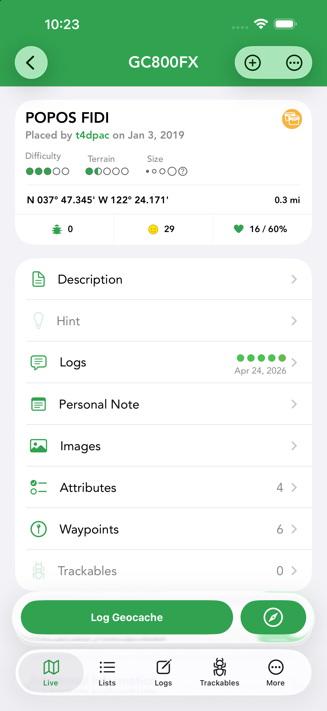
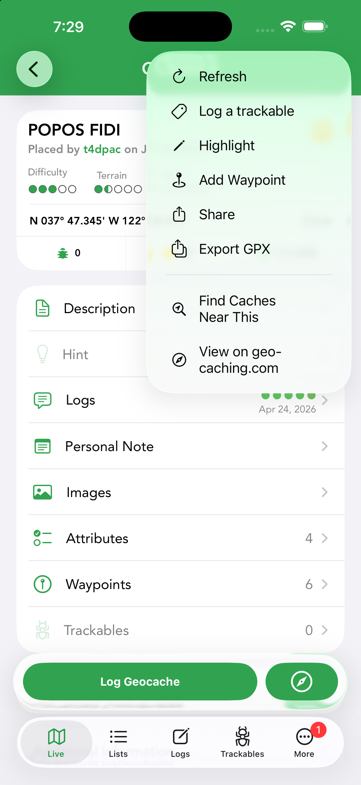
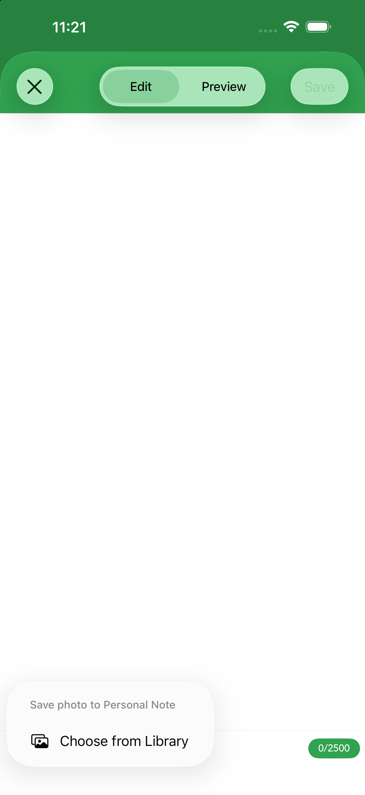
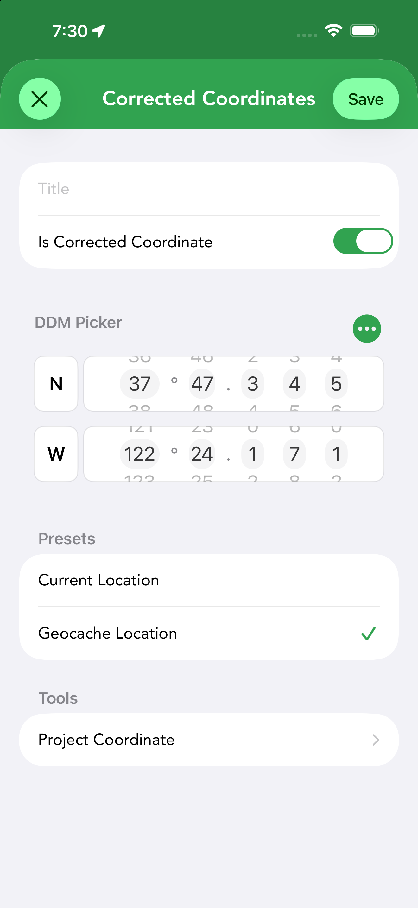
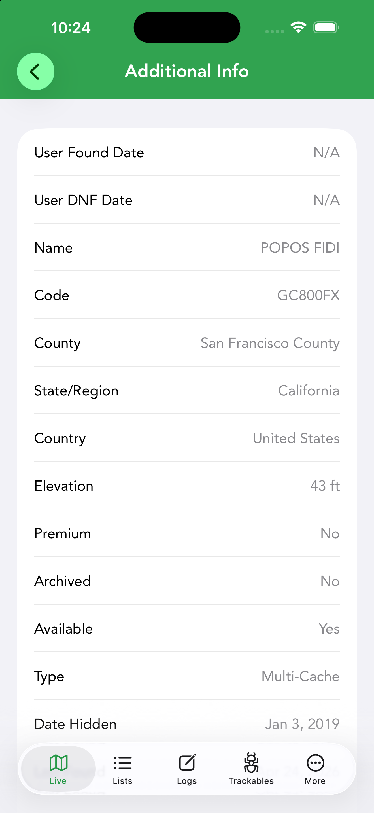
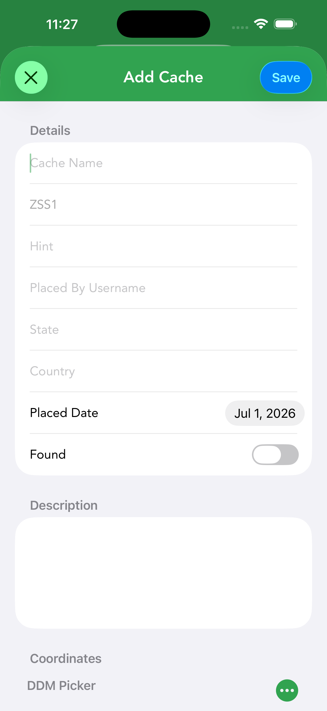

Viewing a Geocache
Tap any cache to open its detail screen — the single place that gathers everything you need to find it: the essentials, the full description, the hint, recent logs, photos and waypoints.






The essentials
The top of the detail screen shows the cache’s identity at a glance: its name and code (GC…), who placed it and when, its type icon, difficulty and terrain ratings and container size. Below that sit the cache’s coordinates with your current distance to it, plus three quick counters: trackables in the cache, the cache’s find/happiness score, and its favorite points.
Those header elements are interactive:
- Tap the favorites count to see the users who awarded the cache a favorite point.
- Tap the cache icon to see your own logs for this cache; long-press the middle finds area for My Logs and Friends Logs.
- Long-press the cache code in the title bar to copy it.
- Tap the coordinates to cycle through display formats; long-press them to copy.
The rest of the screen is a list of sections — Description, Hint, Logs, Personal Note, Images, Attributes, Waypoints and Trackables (rows show a count where useful, e.g. “Waypoints 6”) — followed by Corrected Coordinates and Additional Information. Pinned to the bottom are the Log Geocache button and the round navigate button, so logging and navigation are always one tap away.
Cache types & icons
Cachly recognizes more than 20 cache types — including Traditional, Multi-cache, Mystery (Unknown), Virtual, Letterbox Hybrid, EarthCache, Wherigo, Webcam, Event, CITO, Mega/Giga Event and Adventure Lab — each with its own colored icon. Map pins are inverted teardrops colored by type, with decorations layered on:
- A checkmark = found; an X = your DNF; a star = a cache you own.
- FTF badge = first-to-find available; indicators also mark “lonely” caches and upcoming events.
- Strikethrough text = archived, disabled or unpublished.
Description
The full listing description offers three viewing modes, and Cachly remembers your preference:
- Text — a clean standardized format with links and images.
- Web — the web-rendered version, useful when text formatting misbehaves.
- Source — the raw HTML, handy for puzzle caches that hide clues in the markup.
The options menu adds Translate with Google and print, and the sparkle button summarizes a long description with Cachly Intelligence. Coordinates found in the description are tappable for quick actions such as Create Waypoint, Set as Corrected Coordinates, Copy Coordinates and Navigate.
Hints & the solution checker
The owner’s hint is stored encrypted (ROT13) and Cachly decrypts it for you only when you open the Hint screen — so you won’t spoil yourself by accident. If a cache has no hint, the row is grayed out on the detail screen. For mystery/puzzle caches, Cachly includes a solution checker that verifies your proposed final coordinates against the listing’s checker, confirming you’ve solved it before you head out.
Recent logs & photos
Recent logs from other cachers tell you whether the cache is healthy and give hints about the hide. Each entry shows the log type icon and date, the finder’s name with their find count, badges for logs voted Great Story or Helpful, and a photo count when images are attached. The photo gallery shows images attached to the listing and to logs; downloaded caches keep their photos available offline.
Images
The Images gallery shows photos from the listing and logs in a grid grouped by date; tap one for the full-screen viewer with save and share, and swipe through. For offline caches you can Download Current Images, Download More Images (fetch additional photos from geocaching.com), or Delete All Images to reclaim space.
Personal notes
A personal note stores your own info about a cache — up to 2,500 characters — and the text syncs with your geocaching.com account. Notes found in a GPX file can be kept or merged during import. Cachly detects coordinates you type into a note; tap them for quick actions: Create Waypoint, Set as Corrected Coordinates, Check Solution (for caches with a checker), Copy Coordinates and Navigate.
The + button at the bottom left of the note editor attaches photos to the note — take a photo or choose one from your library. Attached images are stored in iCloud (under the cache’s GC code), so they sync to all of your devices running Cachly.
Attributes
Cache attributes summarize conditions and requirements — Available at all Times, Stealth Required, Field Puzzle, Tourist Friendly, and so on. The Attributes screen lists them in plain language with their icons so you can plan before you go.
Waypoints
The Waypoints screen starts with the cache’s Original Coordinates and then lists its additional waypoints — parking, trailheads and the stages of a multi, each with its own description and coordinates — along with any user waypoints you add yourself with the + button (including projections). See Waypoints & Coordinates.
Trackables in the cache
The Trackables row shows how many Travel Bugs and geocoins are currently in the cache. Open it to see each trackable with where it was last seen; tap one for its full details. To grab or discover a trackable, use the log flow when you log the cache.
Corrected coordinates
Corrected coordinates mark a cache’s real/final location — common on Mystery, Wherigo and Multi-caches — and sync automatically with geocaching.com. A corrected cache shows a red triangle on its pin and its coordinates in green at the top of the detail screen; by default it’s shown at the corrected spot. To view original locations instead (e.g. for Geo Art), enable Settings › Caches & Waypoints › Ignore Corrected Coordinates (the triangle then shows a question mark). Corrected coordinates can be removed at any time.
Tap Corrected Coordinates › Add on the detail screen to open the editor:
- Is Corrected Coordinate — the toggle that marks the entry as the cache’s corrected location.
- Coordinate entry — a DDM picker by default; the format menu switches between DDM Picker, Degrees Decimal Minutes, Decimal Degrees, Degrees Minutes Seconds and Plain Text, and offers Current Location, Copy and Paste. The same menu appears in coordinate editors throughout Cachly.
- Presets — fill in your Current Location or the Geocache Location as a starting point.
- Tools — Project Coordinate computes a point from a distance and bearing.
Additional Information
The Additional Information screen at the bottom of the details list collects everything else about the cache in one table: your found and DNF dates, the name and code, county, state/region and country, elevation, whether the cache is premium, archived or available, its type, the date hidden, the last found date, difficulty and more.
Found but not logged
If you log a find but save it as a pending log or draft rather than posting it, the cache is marked Found but not Logged — a checkmark on the map pin and list icon so you can see at a glance that you’ve found it but haven’t finished the log.
Buttons & menus
Along the bottom of the detail screen, Log Geocache opens the logging flow and the round compass button starts navigation. The top bar has two menus:
- + — Add to List (save the cache to an offline list), Watch (add it to your geocaching.com watchlist) and Ignore. Items you’ve already applied switch to their Remove counterparts.
- ⋯ — the actions below.
| ⋯ menu | What it does |
|---|---|
| Refresh | Re-download the cache’s data. |
| Log a trackable | Log a Travel Bug / geocoin against this cache. |
| Highlight | Set (or edit/remove) the cache’s color highlight. |
| Add Waypoint | Create a user waypoint (incl. projection). |
| Share | Share the cache via the iOS share sheet. |
| Export GPX | Export the cache to a GPX file. |
| Find Caches Near This | Search for caches around this one. |
| View on geocaching.com | Open the listing in the browser. |
Extra items appear when they apply: Edit / Delete for offline caches (on caches saved in several lists, Delete lets you remove it from this list or from all), Load Full Cache for Basic members (who get lite data by default), Add to Calendar for events, and Download Cartridge for Wherigo caches.
Creating an offline geocache
Cachly can also create a cache entry from scratch — useful for hides you’re planning, caches from other listing sites, or waypoint-style targets you want to treat as a full cache. Choose Create Offline Geocache from an offline list’s ⋯ menu, or from the menu of a dropped pin to start it at that spot. The new cache is stored in the offline list like any other, so you can navigate to it, add waypoints and log it.
The editor covers everything a real listing has:
- Details — cache name, cache code, who placed it, the Placed Date, and a Found toggle.
- Description — free-form listing text, plus a hint.
- Coordinates — the standard DDM picker with the same coordinate-format menu (DDM, Decimal Degrees, DMS, Plain Text, Current Location, Copy, Paste).
- Type — pick any cache type.
- Difficulty and Terrain — sliders from 1.0 to 5.0.
- Size — the container size.
- Options — Available, Archived and Premium toggles, plus state and country.
Tap Save to add the cache to the list; you can Edit it later from its detail screen’s ⋯ menu.